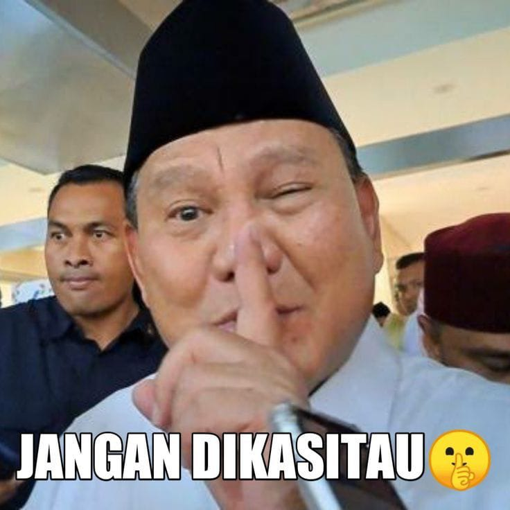
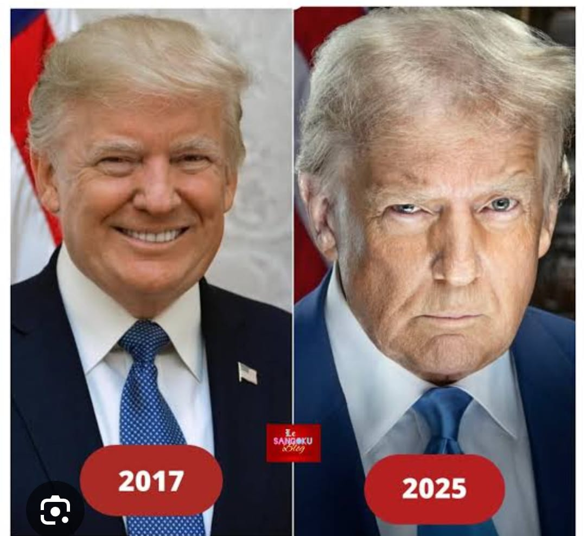

归功于
主程序 - @AyamIntel V.6.0.0.3(Beta)
主要思想和内容 - @TheAyam
原创想法 - Filbert 和朋友们
主程序 - @AyamIntel V.6.0.0.3(Beta)
主要思想和内容 - @TheAyam
原创想法 - Filbert 和朋友们
Gilbert (团队负责人)
只有他们知道，你认为他们知道什么🤨？- Deepseek
Filbert (主要思想家)
他几个世纪以来从没碰过淋浴 (这是令人担忧的😥😥😥). - Deepseek
Owen (想法贡献者)
Donald Trump : I'VE PLAYED THESE GAMES BEFORE!!! - ChatGPT
Vincent (程序员)
或者我应该说 “Caseoh 的小竞争对手😭” - Deepseek
Maykheal (翻译者)
他认为自己很有趣（可惜 不是😂😭）- Deepseek
Joshua (想法贡献者)
终于，一个正常人出现了 - @TheAyam